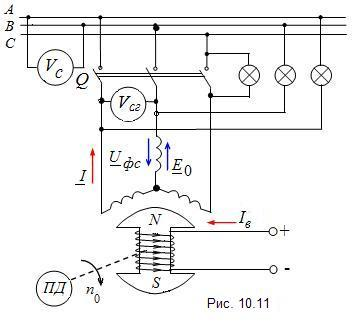
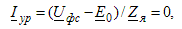

|
При подключении генератора к мощной энергосистеме, объединяющей
общей электрической сетью множество электростанций и потребителей,
необходимо избежать бросков тока в обмотке статора и возникновения
ударных электромагнитных моментов на валу. С этой целью предварительно
на холостом ходу необходимо отрегулировать режим работы генератора
и в определённый момент времени включить генератор в сеть. Совокупность
этих операций называют синхронизацией
генератора.

Чтобы синхронизировать генератор с сетью, необходимо обеспечить:
а) отсутствие токов в фазах обмотки якоря в момент
замыкания трёхфазного включателя Q (рис. 10.11). Это возможно только в случае, когда напряжение сети Uфc = E0,
т. е. Uфc
- E0 = 0. Разогнав первичный двигатель ПД до номинальной частоты вращения
n0
и изменяя ток возбуждения Iв,
устанавливают величину ЭДС E0,
равную напряжению Uфc:
посредством вольтметров Vc
и Vcг
(см. рис.10.11) измеряют линейные напряжения сети и генератора.
При их равенстве выполняется условие Uфc = E0;
б) электродвижущая сила E0
в момент замыкания включателя Q должна находиться в фазе с напряжением
сети Uфc.
Тогда ЭДС E0
в фазной обмотки генератора и фазное напряжение сети Uфc
будут направлены встречно и уравнительный ток включения в обмотке
якоря

где Zя
- полное сопротивление фазы обмотки якоря синхронной машины.
|